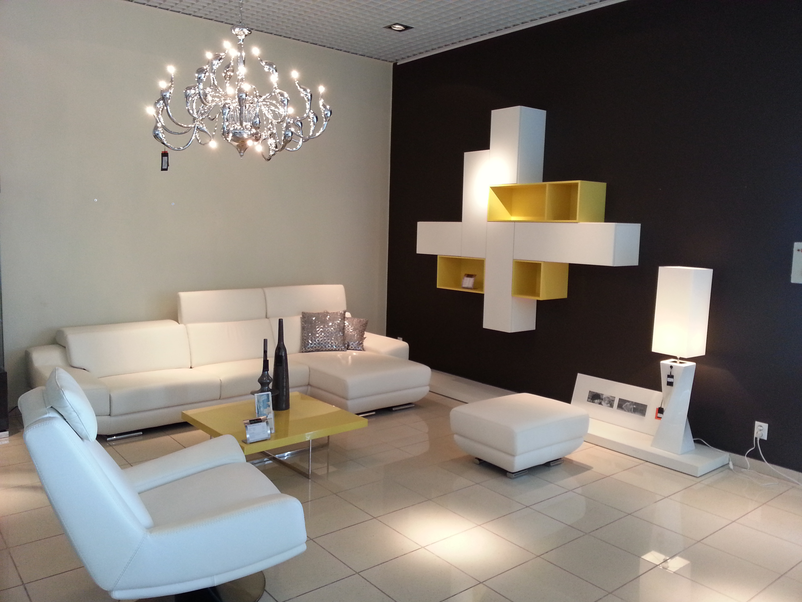

Služby
Návrhy a design soukromých prostor
Jak vypadá spolupráce mezi designérem a klientem:
- 1. Designer se spojí se zákazníkem telefonicky nebo e-mailem, kde se seznámí s požadavky klienta.
- 2. Následuje první bezplatná nezávazná konzultace, na které se podle požadavků zákazníka dohodne konkrétní spolupráce (nejlepší je mít na schůzku připraven půdorys prostoru s kótami nebo základními rozměry, popř. fotky konkrétního prostoru).
- 3. Na další schůzce přímo u zákazníka, dojde k zaměření daného prostoru a designér na místě analyzuje potenciál prostoru a zjistí klientovy požadavky na vybavenost, barvy a styl požadovaného interiéru nebo exteriéru.
- 4. Designér vypracuje 2 různé návrhy na realizaci prostoru, které jsou zákazníkovi představeny pomocí 3D vizualizací (zákazník má představu o tom, jak bude interiér v případě realizace vypadat). Dostane také předběžný finanční rozpočet k daným variantám.
- 5. Zákazník si vybere jednu ze dvou variant (popř. určité prvky z jedné nebo druhé) a designér připraví finální verzi, podle které se pak provede realizace interiéru. Součástí jsou i výkresy případných stavebních změn, rozvodů elektroinstalací, odpadů, vodoinstalací, výkresy atypického nábytku apod. Klient tak dostane kompletní projekt a návod, podle kterého pak naši nebo jeho řemeslníci samotný návrh a nábytek zrealizují a vyrobí.
V případě zájmu o realizaci návrhu interiéru zajistíme také autorský dozor. Zákazník tak může v klidu řešit své povinnosti a realizaci interiéru může svěřit do rukou zkušených odborníků.
Ceník
Můžete si vybrat, zda se konečná cena za poskytnuté služby bude počítat podle hodinové sazby nebo jako dohodnutá částka za kompletní návrh interiéru nebo Feng – Shui analýzu.
| Návrhy a úpravy prostoru | 550,-Kč /hod |
| Nákup nebo úklid s designerem | 350,- Kč /hod |
| Feng – shui konzultace a poradenství | 550,- Kč/hod |
| Doprava po Praze | ZDARMA |
| celá ČR | 7,-Kč/ km |
Orientační ceny kompletního návrhu
- upřesníme podle velikosti a složitosti prostoru
- záleží, zda klient požaduje pouze půdorysné řešení nebo 3D vizualizaci a jaké požaduje další změny v návrhu
| Kompletní návrh prostoru – 1 místnost cca 30 m2 | od 5 000,- Kč |
| více místností do 50 m2 | od 7000,- Kč |
| více místností do 100 m2 | od 14000,- Kč |
| Kompletní Feng – shui analýza – 1 místnost do 30 m2 | od 4000,- Kč |
| více místností do 50 m2 | od 6000,- Kč |
| více místností do 100 m2 | od 12000,- Kč |
Pokud si klient bude přát kompletní návrh prostoru a zároveň Feng – shui analýzu a návrh prostoru vytvořit podle učení Feng – shui, částky se nesčítají, ale dohodne se individuální cena podle rozsahu požadovaných prací.